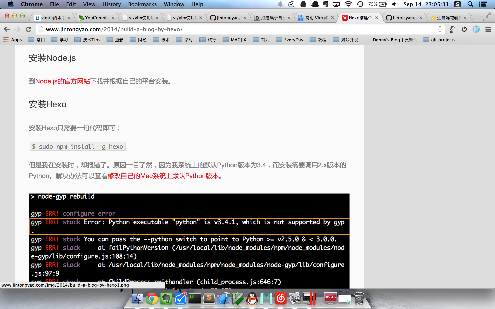

昨天，终于让我的网站成功的绕过了备案系统跑在了域名上。
于是我非常兴奋的在qq空间上宣布了这个消息。但是，很快就有朋友告诉我，效果怎么这么烂。
这无疑重创了我易碎的玻璃心，我明明调试的非常完美了才宣布的啊！这是为什么？
很快我就发现了原因，因为他使用了IE8访问。。。
于是我不情愿的打开了虚拟机，用win7自带的IE8访问了一下我的网站，没想到效果比我想象的还要惨不忍睹。
注，本文中的IE特指IE6，IE7，IE8。从9开始，好了很多，也支持我的网站。。。
下面是对比图：
第一组（主页）
ie的效果 ⬇︎
chrome的效果 ⬇︎
好样的，IE把我的样式全吃了。。。
第二组（内容页首）
ie的效果 ⬇︎
chrome的效果 ⬇︎
先不说样式了，侧边栏也不见了。。。
第三组（内容图片）
ie的效果 ⬇︎
chrome的效果，鼠标点击图片可以出现fancybox效果 ⬇︎

ie中图片直接按原大小显示了出来，没有适配。。。而且fancybox效果也没了
第四组（评论与底部）
ie的效果 ⬇︎
chrome的效果 ⬇︎
原来侧边栏到了最底下。。。最无法让我忍受的是。。。我英俊的头像啊，让你玩成什么样了！！！！！
扔掉你的IE
做完了这个对比测试，我又打开了手机上的浏览器，使用了QQ浏览器和Chrome访问，结果效果都很不错。
好吧，我真心对IE无力吐槽了。
当然，我知道你会说，这不是IE的错，是你的主题兼容性做的太差。
是的，我不否认这一点。但是，我并不准备去改。
因为我的朋友们大多数都是程序员，而且，一个有追求的程序员不应该使用IE来浏览网页！！！
IE的缺点，简直罄竹难书：慢，不符合DOM规范，无扩展性，渲染效果差，占内存多，各种设置复杂且无用。
简而言之，IE一无是处。
但是这些都不是最重要的。
如果你是一个仍然在使用IE的程序员，最应该反思的是，你难道就从没试着去尝试一个更好的浏览器吗？
你可以只用Java，甚至不知道Python，Ruby，Node.js是什么；你可以不使用github，而是把自己的代码继续放在硬盘里；你也可以继续使用着记事本+word的办公组合；但是，你使用频率最高的一个程序：浏览器，你从没想过让他更好用吗？
程序员是这个时代中站在风口浪尖的人，他们比任何人都爱尝试新鲜事物，他们比任何人都需要拥抱变化。如果你不愿折腾，只想固步自封的继续copy着一行行代码，那。。。
事实上，大多数为Hexo写主题的前端攻城狮们，都知道他们用stylus写出来的漂亮界面都无法在IE上正常显示，但是他们义无反顾，坚决的表示不会支持IE。因为他们比我更恨IE。。。
也许你认为我们太偏激了，那看看Github的网站吧：
Pleas note that Github no longer support Internet Explorer 7 or 8
记住，扔掉你的IE。
实在忍不住吐糟了一番。。。然后决定还是得转到qq空间来。但是，qq空间的排版真是太2了！！！如果你使用的是Chrome/firefox/safari/ie9+，推荐你看我的原文。
本文由金同尧原创，首发于JinTongYao’s blog，转载请注明出处。